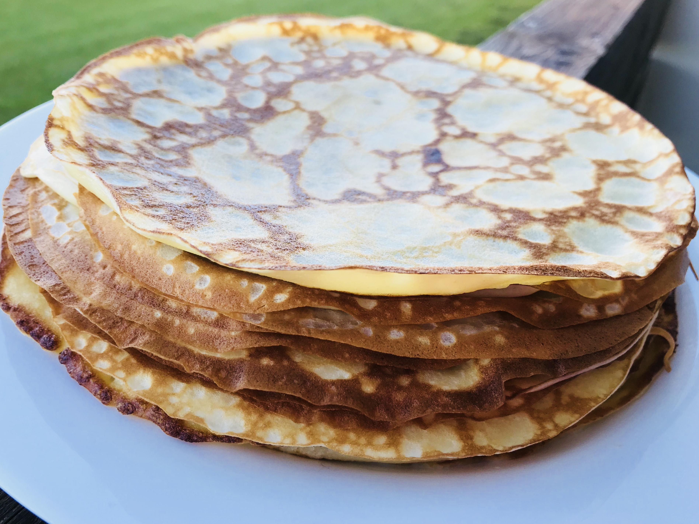

Pannkoogi retsept

Koostisosa | Kogus |
|---|
| Munad (M või L) | 4 |
| Suhkur | 60 g (3/4 dl) |
| Nisujahu | 200 g (3,3 dl) |
| Sool | näpuotsaga |
| Piim | 5 dl |
| Sulatatud või | 50 g |
Valmistamine
- Klopi munad suhkruga lahti.
- Sega juurde jahu, piim ja sool ning sega ühtlaseks.
- Lisa sulavõi, sega läbi.
- Küpseta pannil mõlemalt poolt kuldseks.